Git 聊天入门
Git 可以很复杂，Git 也可以很简单。
读一本Git的书和读一篇Git的文章给人的知识含量是不同的，但给人的愉悦感也是迥异的。本文不想写成一本书，至少不想让你有读书的感觉，但也不想像一篇文章似的只给你一个git的知识点。本文只是想从实际使用的角度，让大家都掌握 git 最简单，但又最有用的那些知识点。—— 因为本来这些问题都是来自于我和朋友们的聊天，可以说是我们的闲聊集，哪会有什么高深的理论？
git 有自己的 user manunal，如果你读来无碍，请忽视本文，本文与它们相比只是个小人书、连环画。
Round 1
git在哪里
- Unix系（Ubuntu/Fedora/MAC-OS.X/……）默认就有，打开terminal，输入
git --version，就在那里了 - Windows上要安装：Git for Windows
- 提供我们团队FTP的下载链接：Git-2.7.0-32-bit.exe
Git for Windows 咋用
一路“下一步”安装完即可。
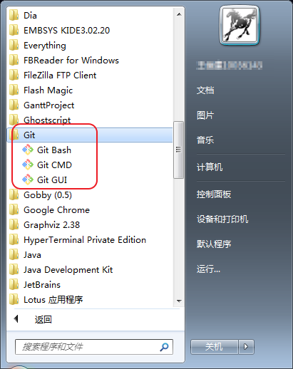
- Git Bash: Linux 风格的命令行，如： /user/bin
- Git CMD： Windows风格的命令行，即：C:\system
- Git GUI: 图形化界面
- 其实还有一个： ${安装目录}/bin/sh.exe —— 我喜欢直接用这个
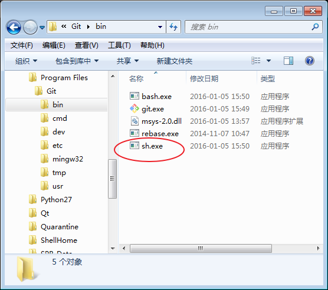
对比一下1和4：
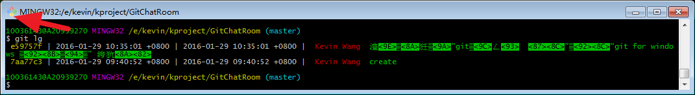
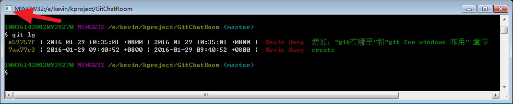
- 1和4的图标不同，4其实是Windows自身的cmd窗口
- 4由于是Windows自身cmd窗口，所以对中文支持较好
所以建议您直接用4：直接双击或在cmd中打开 ${安装目录}/bin/sh.exe 来运行MinGW环境和git
先单机玩玩还是先弄来个别人的git库
先单机玩玩吧，理由如下：
git 和 svn 最大的区别：
- svn是集中式管控：所有库（repo）的内容都在server上，离了server连 svn log 都看不了，更别说提交代码了
- git是分布式管控：每个git项目里面的.git文件夹中都包括了所有的库（repo）内容，可以看log、提交代码、创建分支、打tag……
- 两台电脑的git库之间是同步（sync）的概念，大家都是平等的
所以说我们还是先练习一下除了sync之外的基础命令吧，会了这些之后，至少你能在本机快乐的写日记了。
我看到有些小伙伴还在用类似EDiary等日记本软件或PIM软件来写每天的日记，积累了这么多年的日记，一旦win10上运行不了EDiary可咋整？还是赶紧试试用纯文本+Markdown来写日记，用git本地做版本管理吧！
下文我使用个人日记的小项目来演示本机的git操作
如何在本机git我的日记
OK，让我们从头开始，跟着做一遍吧，Good Luck ……
- 做一下git要求的最基本的两个配置：name 和 email
$ git config --global user.name wkevin $ git config --global user.emal wkevin27@gmail.com - 创建一个文件夹并写一篇日记
MBP:demo wangkevin$ mkdir mydiary MBP:demo wangkevin$ cd mydiary $ cat >diary.md # Diary ## 2016.1.31 回家过年^C $ ls diary.md $ cat diary.md # Diary ## 2016.1.31 回家过年 git init:在文件夹中创建git库
$ git init Initialized empty Git repository in /Users/wangkevin/workspace/kproject/demo/mydiary/.git/- 和SVN有.svn类似，git也有.git
$ ls -a . .. .git diary.md $ ls .git HEAD config hooks objects branches description info refs $ cat .git/config [core] repositoryformatversion = 0 filemode = true bare = false logallrefupdates = true ignorecase = true precomposeunicode = true git status：显示一个未被管控的文件(Untracked files) diary.md
$ git status On branch master Initial commit Untracked files: (use "git add <file>..." to include in what will be committed) diary.md nothing added to commit but untracked files present (use "git add" to track)git add filename：将文件纳入管理，filename 支持通配符，最常用的就是点(.)表示所有文件
$ git add diary.mdgit status显示此文件待提交（to be committed），此时文件已经开始被git管理了，文件进入一种暂存状态（stage），如果想反悔可以用git rm --cached使其进入unstage状态
$ git status On branch master Initial commit Changes to be committed: (use "git rm --cached <file>..." to unstage) new file: diary.mdgit status -s-short 短模式
$ git status -s A diary.mdgit status -b-branch 显示分支，git status不带参数默认就是-b的，所以常和短模式合作，合并为一个sb，哈哈
$ git status -sb ## Initial commit on master A diary.mdgit commit: 将文件从暂存态提交入库 —— 暂存就像回收站（删除前给你一个check的机会，多次操作放入回收站的文件可以一次清空），多次操作放入暂存，最后考虑成熟了，check OK了，再commit提交
$ git commit [master (root-commit) 14dd781] create mydiary 1 file changed, 4 insertions(+) create mode 100644 diary.md- 执行
git commit后会自动打开一个编辑器（编辑器是可配置的，以后再说怎么配置），比如 vi，进行提交log的撰写，保存退出即提交成功，不保存退出即放弃提交
1 2 # Please enter the commit message for your changes. Lines starting 3 # with '#' will be ignored, and an empty message aborts the commit. 4 # On branch master 5 # 6 # Initial commit 7 # 8 # Changes to be committed: 9 # new file: diary.md 10 # - 再查
git status，都已经提交干净了
$ git status On branch master nothing to commit, working directory clean $ git status -s - 现在可以看log了
$ git log commit 14dd7815fcf56c961e11c52e96e2fc3fbd7d0543 Author: wkevin <wkevin27@gmail.com> Date: Sun Jan 31 11:39:55 2016 +0800 create mydiary - git 和 svn 不同，没有一个数字递增的节点号，而是一串40Bytes的哈希字符，指定一个提交只需要给出这个字符串即可，当然不能让你每次都把40个字符全输入一遍，只需要输入够区分提交的即可（一般是前7位），如果咱的库规模还很小，前4位也行哦（下文中的“6784”）
$ git lg b81373d | 2016-01-31 15:49:08 +0800 | 2016-01-31 15:49:08 +0800 | wkevin add .gitignore file 67840e1 | 2016-01-31 12:20:26 +0800 | 2016-01-31 12:20:26 +0800 | wkevin 2.2日记 bf36ab9 | 2016-01-31 12:19:33 +0800 | 2016-01-31 12:19:33 +0800 | wkevin 2.1的日记 14dd781 | 2016-01-31 11:39:55 +0800 | 2016-01-31 11:39:55 +0800 | wkevin create mydiary $ git log 6784 commit 67840e1813af1084abd5d07d2e2a2e185c679f09 Author: wkevin <wkevin27@gmail.com> Date: Sun Jan 31 12:20:26 2016 +0800 2.2日记 - 每天可以随时写日记、随时
git add、适时git commit，经过一段时间，你的diary库就越来越让你爱不释手了
$ git log commit 67840e1813af1084abd5d07d2e2a2e185c679f09 Author: wkevin <wkevin27@gmail.com> Date: Sun Jan 31 12:20:26 2016 +0800 2.2日记 commit bf36ab9b0d489a2eda911be9e01bddc395fc29e0 Author: wkevin <wkevin27@gmail.com> Date: Sun Jan 31 12:19:33 2016 +0800 2.1的日记 commit 14dd7815fcf56c961e11c52e96e2fc3fbd7d0543 Author: wkevin <wkevin27@gmail.com> Date: Sun Jan 31 11:39:55 2016 +0800 create mydiary - 觉得
git log默认显示的内容不爽？想看更详细的、或更简略的？——别急，统统没问题，各种参数全方位满足你的各种需求，但这里先不说，后文慢慢来，先不要用这些复杂的参数来打击自己吧，不过来个一步简洁到位的的命令：git shortlog—— 什么？太简洁了？哈哈，别急，从简洁到纸到复杂到翔全都有，慢慢来。
$ git shortlog wkevin (3): create mydiary 2.1的日记 2.2日记
如果只是做个日记本，自己写、自己看、绝不给别人看、绝不上网……这些命令就差不多够了！
哇！好累啊，可以休息一下了，就这些命令，玩几天，把日记写上一个礼拜，然后我们再继续。如果你不打算继续了，也没关系，这些命令就写日记–够用了！
每次都要敲add、commit、status，嫌累了
用git写了一些日记，你肯定有了新需求，能回来接着读说明你是个积极追求上进的好同学，我们继续聊！
有这样的问题说明你已经是git的初级用户了，并且听了我的建议：“使用命令行，远离GUI” —— 我一点都不奇怪，绝大部分程序猿一旦用上git都会上瘾的，会频繁的git commit，然后在git log中寻觅自己的成就感，否则吃不好饭、睡不好觉……呵呵
言归正传。
别名（alias）是linux系统的基本概念，在git中也如鱼得水：
- 这样设置别名
$ git config --global alias.st "status" - 然后就可以这样操作了
$ git st On branch master Changes not staged for commit: (use "git add <file>..." to update what will be committed) (use "git checkout -- <file>..." to discard changes in working directory) modified: diary.md no changes added to commit (use "git add" and/or "git commit -a") - 换个别名玩玩
$ git config --global alias.st "status -sb" $ git st ## master M diary.md - 把让你烦的命令都用2个字来别名一下吧。比如：
$ git config --global alias.ci "commit"
有些文件不希望被git管理
问：markdown写的 diary.md ，会在本地生成 diary.html 检查和欣赏一下，但其实是不需要 commit 的，如何在 git commit 的时候忽略它们。
答：git commit的时候已经不能忽略了，要忽略需要在git add的时候，通过编辑.gitignore文件让add命令忽略它们。
- diary.html 就是我们不想提交的过程文件
$ git st On branch master Changes not staged for commit: (use "git add <file>..." to update what will be committed) (use "git checkout -- <file>..." to discard changes in working directory) modified: diary.md Untracked files: (use "git add <file>..." to include in what will be committed) diary.html no changes added to commit (use "git add" and/or "git commit -a") - 手工生成一个.gitignore的文件，写入含有通配符的文件名（即：后缀名为html的文件）
$ cat >.gitignore *.html ^C $ cat .gitignore *.html - diary.html 已经被自动忽略。
$ git st On branch master Changes not staged for commit: (use "git add <file>..." to update what will be committed) (use "git checkout -- <file>..." to discard changes in working directory) modified: diary.md Untracked files: (use "git add <file>..." to include in what will be committed) .gitignore no changes added to commit (use "git add" and/or "git commit -a")
Round 2
我要筛选 git log
- 可以只看某个子目录或某个文件的log
- 可以从某个提交开始看
$ git log 6784 commit 67840e1813af1084abd5d07d2e2a2e185c679f09 Author: wkevin <wkevin27@gmail.com> Date: Sun Jan 31 12:20:26 2016 +0800 2.2日记 - 可以只看某个人的log
$ git log --author=wkevin commit 67840e1813af1084abd5d07d2e2a2e185c679f09 Author: wkevin <wkevin27@gmail.com> Date: Sun Jan 31 12:20:26 2016 +0800 2.2日记 …… - –author 支持匹配
$ git log --author=wke commit 67840e1813af1084abd5d07d2e2a2e185c679f09 Author: wkevin <wkevin27@gmail.com> Date: Sun Jan 31 12:20:26 2016 +0800 2.2日记 …… - –author 的一个错误匹配
$ git log --author=wken $ - –author 上使用通配符
$ git log --author=wke.*n commit 67840e1813af1084abd5d07d2e2a2e185c679f09 Author: wkevin <wkevin27@gmail.com> Date: Sun Jan 31 12:20:26 2016 +0800 2.2日记
觉得 git log 中的时间看着困难，精简下呗
- 使用 –date=short
$ git log --pretty=medium --date=short commit 67840e1813af1084abd5d07d2e2a2e185c679f09 Author: wkevin <wkevin27@gmail.com> Date: 2016-01-31 2.2日记 commit bf36ab9b0d489a2eda911be9e01bddc395fc29e0 Author: wkevin <wkevin27@gmail.com> Date: 2016-01-31 2.1的日记 commit 14dd7815fcf56c961e11c52e96e2fc3fbd7d0543 Author: wkevin <wkevin27@gmail.com> Date: 2016-01-31 create mydiary
我要定制 git log，不想一页看不了几条
默认的git log一条commit log至少需要6行来显示，一页顶多看个5、6条，很不方便。如果单条达到10行的话，一页也就看个2、3条。像linux这样的项目，经常遇到长篇大论的log，内容倒是详实了，但很难做一览表式的查询。
下面我们祭出 git log 的必杀技： –pretty 或 –format
git log --pretty=xxx 等价于 git log --format=xxx, xxx 可以是这些：
- oneline：只显示一行
- short
- medium
- full
- fuller：会看到有两个角色：author（作者） 和 commit（提交人）
- raw
- format:’......’
其中oneline能够帮你精简log
$ git log --pretty=oneline
67840e1813af1084abd5d07d2e2a2e185c679f09 2.2日记
bf36ab9b0d489a2eda911be9e01bddc395fc29e0 2.1的日记
14dd7815fcf56c961e11c52e96e2fc3fbd7d0543 create mydiary
其实 --oneline 也是一个单独的参数
$ git log --oneline
67840e1 2.2日记
bf36ab9 2.1的日记
14dd781 create mydiary
oneline太简陋了，我想一行里面看到hash、author、date、message
那需要用上 –pretty=formate:”......”参数了
format 参数很多，没必要逐一掌握，除了你是强迫症患者 – 凑巧本文不使用强迫症的视角，哈哈
我常用的有：
- %h：commit hash
- %ai: author date
- %an: author name
- %ci: commit date
- %cn: commit name
- %s: log message
示例：
- 只看日期、作者、log（专业术语是：subject）
$ git log --pretty=format:'%ad %an %s' Sun Jan 31 15:49:08 2016 +0800 wkevin add .gitignore file Sun Jan 31 12:20:26 2016 +0800 wkevin 2.2日记 Sun Jan 31 12:19:33 2016 +0800 wkevin 2.1的日记 Sun Jan 31 11:39:55 2016 +0800 wkevin create mydiary - 日期太碍眼，精简一下
$ git log --pretty=format:'%ad %an %s' --date=short 2016-01-31 wkevin add .gitignore file 2016-01-31 wkevin 2.2日记 2016-01-31 wkevin 2.1的日记 2016-01-31 wkevin create mydiary - 不好了，但太精简了，咋只有date，没有time
$ git log --pretty=format:'%ad %an %s' --date=local Sun Jan 31 15:49:08 2016 wkevin add .gitignore file Sun Jan 31 12:20:26 2016 wkevin 2.2日记 Sun Jan 31 12:19:33 2016 wkevin 2.1的日记 Sun Jan 31 11:39:55 2016 wkevin create mydiary - commit hash 最好也能加上
$ git log --pretty=format:'%h %ad %an %s' --date=local b81373d Sun Jan 31 15:49:08 2016 wkevin add .gitignore file 67840e1 Sun Jan 31 12:20:26 2016 wkevin 2.2日记 bf36ab9 Sun Jan 31 12:19:33 2016 wkevin 2.1的日记 14dd781 Sun Jan 31 11:39:55 2016 wkevin create mydiary
最后，你还需这样：
$ git config --global --replace-all alias.lg "log --pretty=format:'%h %ad %an %s' --date=local"
git log 已经很好了，但好像还是缺点啥
那就是颜色了，加上颜色让字段分的更加清晰
git config --global --replace-all alias.lg "log --pretty=format:'%C(auto) %h | %ai | %Cred %an %Cgreen %s'"
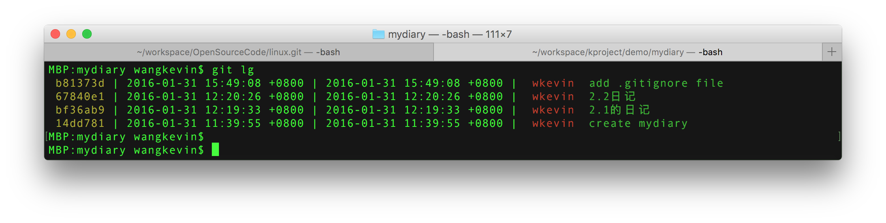
为什么改用%ai，不用%ad了？
%ad会受到--date=xxx的影响，%ai不会。所以限制了%ad的使用，如果常从github上拿代码，会看到世界各地的提交人和提交时间，我还是希望分一下时区的，所以用了%ai。
比如我们来查看linux的源码：
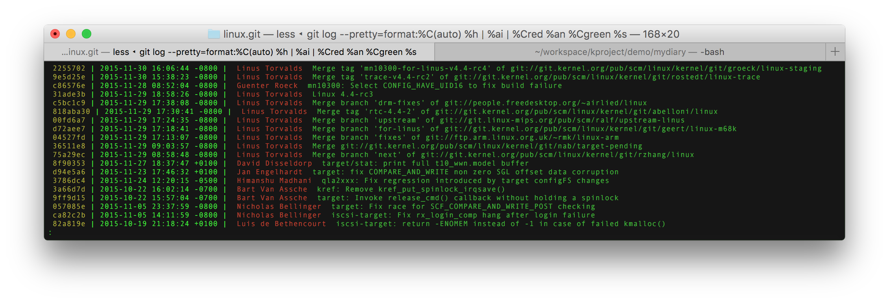
git log –fuller 中的 author 和 commit 啥关系
必须要说了，git的设计者的设计思路是：希望提交人（执行git commit的人）能够把author写明白，而不是据为己有。所以git的作者（author）和提交人（commit）可以不是同一个人。
$ git commit --author=wkevin --date='2016-01-30 22:04:04 +0800'
上面的命令可以在commit的同时指定提交内容的author和AUTHOR_DATE，这个恐怕要靠提交者（committer）的记忆力和公德心了，把这段代码真实author的名字和写就时间录进去，而不是让git默认的把自己的name和提交时间（COMMITTER_DATE）录入库中。
在没有github之前，一个开源项目通常还是只设置几个有权限的提交人，大家想贡献代码就发patch给有权限的人，然后有权人commit。但自从有了github，发明了fork（fork并不属于git，而是github的独创哦）和PR（Pull-Request），让这个过程更加的轻便，也让项目的发展更加《失控》，有能力的人可以在自己的领地fork并发展一个项目，PR或不PR给原作者全凭个人喜好，原作者如果“懒政”，其他人完全可以独立发展。—— 每个人都在自己的库里commit，使得committer和author通常都是一个人，大家都是通过PR给其他人，而不是发送patch了。—— 所以 --author 这个参数已经很久不用一次了。
Round 3
我要能像TortoiseSVN那样左右两栏对比看diff
这个必须有！
git和TortoiseSVN相比是不恰当的，git要和subversion比较，它们两个是协议；TortoiseGit才是和TortoiseSVN比较，这两个是前端。Subversion的前端并不多，除了TortoiseSVN并没有更多的选择，git的前端却不少：TortoiseGit、GitForWindows、Github for Desktop……
前端对协议进行了封装（比如默认安装的TortoiseSVN都已经找不到
svn等命令，所以也不能运行svn log、svn commit）和更多的图形化工作（图标重绘、文本比较工具……）的事情留在后面慢慢说，回到比较工具上来：除非你是要制作补丁包，或者改动很小，否则你几乎不会想直接查看git diff，配置好第三方比较工具的调用方法是必须要做的 —— 这个懒偷不得。git 调用第三方工具是灵活的，当然TortoiseSVN调用第三方diff/Merge工具也是可定制的，并且用户不指定第三方工具的话，TortoiseSVN项目自己做了一个比较工具TortoiseMerge来作为默认，TortoiseGit也是有默认的。git则需要手工设置。
git中查看差异有两个命令:
git diff: 在Terminal中按照Linux的传统方式生成patch
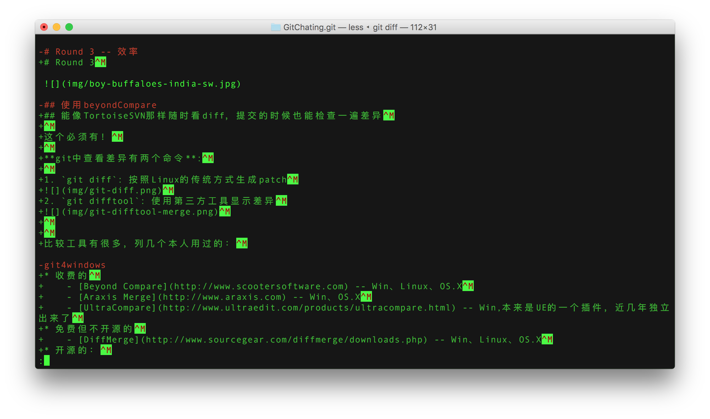git difftool: 使用第三方工具显示差异
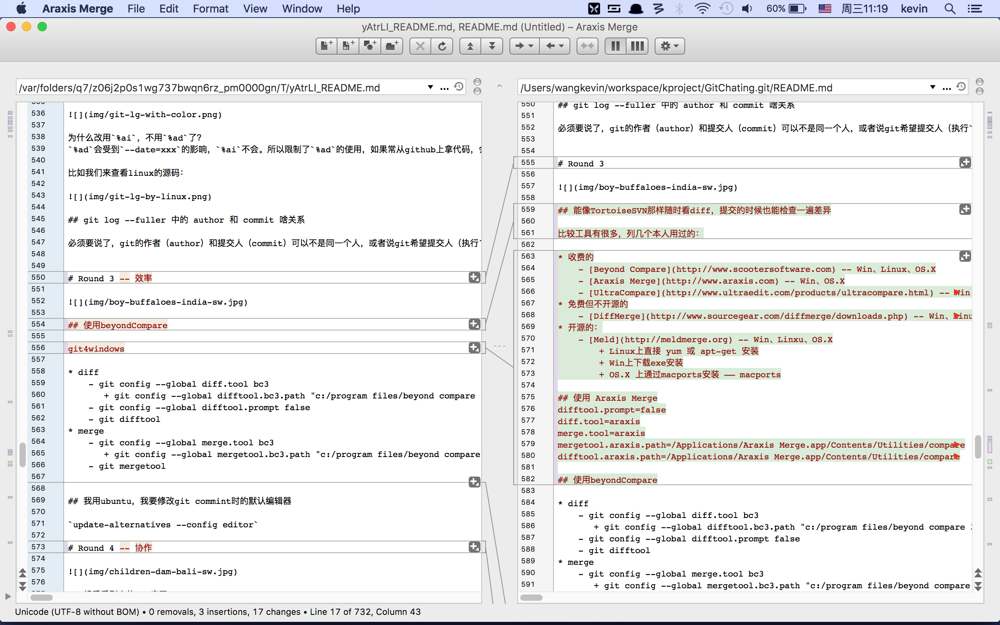
git difftool 命令能够调用的第三方比较工具有很多，列几个本人用过的：
- 收费的
- Beyond Compare – Win、Linux、OS.X
- Araxis Merge – Win、OS.X
- UltraCompare – Win,本来是UE的一个插件，近几年独立出来了
- 免费但不开源的
- DiffMerge – Win、Linux、OS.X
- 开源的：
- Meld – Win、Linxu、OS.X
用哪个呢？这是萝卜白菜的事情，不要纠结，你用惯了哪个就是哪个（我相信你的电脑上肯定已经有了一个文本比较工具，用它就是了，本着开放、开源、和跨平台的原则，我个人推荐Meld）。git调用它们的方法配置是大同小异。我不能每种软件在每个系统中都试一遍，所以只能条目列在这里，但我本人没搞过的就空着了，看官自己百度一下吧，照葫芦画瓢能力强的话也用不着百度。
- Araxis Merge
- OS.X:
vi ~/.gitconfig，加入：
difftool.prompt=false diff.tool=araxis merge.tool=araxis mergetool.araxis.path=/Applications/Araxis Merge.app/Contents/Utilities/compare difftool.araxis.path=/Applications/Araxis Merge.app/Contents/Utilities/compare - Linux
- Windows
- OS.X:
- BeyondCompare
- OS.X
- Linux
- Windows
$ git config --global diff.tool bc3 $ git config --global difftool.bc3.path "c:/program files/beyond compare 3/bcomp.exe"
- DiffMerge
- OS.X
- Linux
- Windows
$ git config --global diff.tool diffmerge $ git config --global difftool.diffmerge.cmd 'diffmerge "$LOCAL" "$REMOTE"'
- Meld
- OS.X
- Linux
- Windows
除此之外，还可以配置一项：
$ git config --global difftool.prompt false
OK，弄好了吧，我们来总结一下其知识点，如果不想看，可以跳过去看下条了。
- 配置方法两种：
- 通过
git config ...命令 - 通过
vi ~/.gitconfig直接修改git的配置文件，方法1最终也是落实到2上
- 通过
- 配置命令有两个：
- cmd：git在执行某个difftool的时候，执行的命令，用户没有定义的话，会使用tool的名字做默认启动；如果用户定义的话，就必须加上 $LOCAL $REMOTE
- path: 用于定位不在PATH变量里的命令，但不需要加 $LOCAL $REMOTE
肯定还是有些完美主义者，一台电脑上安装了多个比较软件，想要不断切换 —— 也是没问题的。
- 可以配置多个cmd
$ git config --global difftool.bc.cmd 'beyondcompare "$LOCAL" "$REMOTE"' $ git config --global difftool.am.cmd 'araxismerge "$LOCAL" "$REMOTE"' $ git config --global difftool.dm.cmd 'diffmerge "$LOCAL" "$REMOTE"' - 根据需求随时切换
$ git config --global diff.tool bc
或
$ git config --global diff.tool am
或
$ git config --global diff.tool dm
我用ubuntu，我要修改git commint时的默认编辑器
ubuntu$ update-alternatives --config editor
这个问题不属于git的范畴，而是linux的。
听说git的提交是到什么暂存区（stage），是个什么意思
理解git需要理解文件的5种状态和3个区（area）：
5种状态：
- 未跟踪态（untracked）
- 未修改状态（unmodified）
- 修改状态（modified），即：待暂存（staging）
- 已暂存（staged）
- 已提交（committed）
3个区：
- 本地工作目录（working directory）
- 暂存区（staging area，又叫做index）
- git库（repository）
1、2、3状态在本地工作目录，4状态属于暂存区，5状态属于git库。
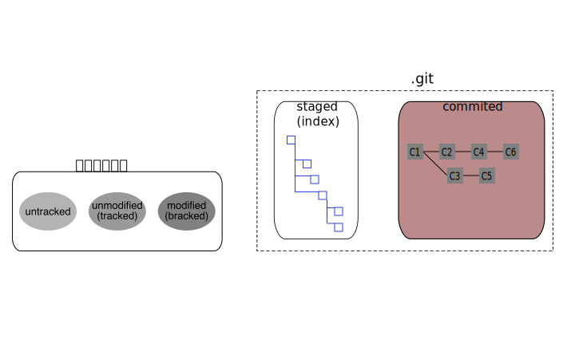
如果我修改了一下README.md，git add了一下，然后又修改了一下，用git st的打印是这样的：
$ git st
On branch master
Your branch is up-to-date with 'origin/master'.
Changes to be committed:
(use "git reset HEAD <file>..." to unstage)
modified: README.md
Changes not staged for commit:
(use "git add <file>..." to update what will be committed)
(use "git checkout -- <file>..." to discard changes in working directory)
modified: README.md
很多地方把暂存和stage混在一起，不查字典的话还以为stage的中文翻译就是暂存。其实 stage 就这个单词的本身的意思是：
- 名词：舞台、讲台，比如：戏剧表演的舞台、国际政治的舞台；阶段，类似phase，比如：stage one/two意思是第一/二阶段，three-stage rocket意思是三级火箭
- 动词：上演、举行、组织，类似play、organize，比如：stage a football match，举办足球赛
stage本身并没有暂存的意思，git中可以理解为把文件放到一个舞台上上演一下，进而文件进入到一个新的阶段。——用这个词可以说是一箭三雕。
你可以输入git help stage 看看
GIT-STAGE(1) Git Manual GIT-STAGE(1)
NAME
git-stage - Add file contents to the staging area
SYNOPSIS
git stage args...
DESCRIPTION
This is a synonym for git-add(1). Please refer to the documentation of that command.
git stage 是同义于 git add 的：将文件加入到 staging area（舞台区、阶段区、进而翻译为暂存区，下文我还是尽量不去翻译这个词汇，而直接用英文吧，或搞个缩写：SA —— 如果让我翻译，我会译为：检视区）。
把前面已经提到过暂存区像回收站，把文件放在回收站是给操作人一个检视的机会和反悔的机会，操作妥当后再彻底删除，彻底删除后再想反悔就要费劲了。git的staging area也是给用户一个检视的机会和反悔的机会，用户可以：
- 使用
git add或git stage命令随时向SA增加文件，和回收站不同的是后进入SA的文件会覆盖前面进入的 - 使用
git checkout命令随时从SA反悔，文件会从SA移除，是否覆盖
我想做个分支（branch），怎么做
好了，这里要提到一个非常重要的概念了，很多git书籍都会强调的一点：git的branch只是个指针 —— 也常被称作“git的必杀技”。
git 的分支操作异常的迅速、便捷、和轻量级，全部依赖于branch只是个指针，类似于C语言的指针，但这个指针不是4Bytes，而是包含了比较多的信息（算是个struct吧，呵呵），通常书里是这样描述此指针的：
MBP:GitChat.git wangkevin$ git br
* master 12205fd [origin/master] 写完 “## 我要能像TortoiseSVN那样左右两栏对比看diff”章节
remotes/origin/master 12205fd 写完 “## 我要能像TortoiseSVN那样左右两栏对比看diff”章节
MBP:GitChat.git wangkevin$ git lg
12205fd | 2016-02-04 00:50:37 +0800 | 2016-02-04 00:50:37 +0800 | wkevin 写完 “## 我要能像TortoiseSVN那样左右两栏对比看diff”章节
8216a0b | 2016-02-02 23:55:44 +0800 | 2016-02-02 23:55:44 +0800 | wkevin 基本写完 Round 2 ，git log 部分
8674466 | 2016-01-31 16:22:59 +0800 | 2016-01-31 16:22:59 +0800 | wkevin 在动车上写的：修改为Round x，增加了每个Round的插图。 虽然是春运，但动车上并不挤，卧改座的还能躺着睡觉，坐票也有些车厢人很少。 还有2h下车，提交一下，休息休息。
ac580f2 | 2016-01-30 22:04:04 +0800 | 2016-01-30 22:04:04 +0800 | wkevin github desktop for windows snapshot
de9a9ab | 2016-01-29 17:51:48 +0800 | 2016-01-29 17:51:48 +0800 | Kevin Wang add git for windows 章节
e59757f | 2016-01-29 10:35:01 +0800 | 2016-01-29 10:35:01 +0800 | Kevin Wang 增加："git在哪里"和"git for windows 咋用" 章节
7aa77c3 | 2016-01-29 09:40:52 +0800 | 2016-01-29 09:40:52 +0800 | Kevin Wang create
MBP:GitChat.git wangkevin$ git fetch origin
remote: Counting objects: 6, done.
remote: Compressing objects: 100% (5/5), done.
remote: Total 6 (delta 2), reused 5 (delta 1), pack-reused 0
Unpacking objects: 100% (6/6), done.
From https://github.com/wkevin/GitChat
12205fd..c242093 master -> origin/master
MBP:GitChat.git wangkevin$ git br
* master 12205fd [origin/master: behind 2] 写完 “## 我要能像TortoiseSVN那样左右两栏对比看diff”章节
remotes/origin/master c242093 笔误
MBP:GitChat.git wangkevin$ git lg origin/master
c242093 | 2016-02-04 11:30:21 +0800 | 2016-02-04 11:30:21 +0800 | wkevin 笔误
48eda25 | 2016-02-04 11:21:57 +0800 | 2016-02-04 11:21:57 +0800 | wkevin 笔误: 缺少一个反括号
12205fd | 2016-02-04 00:50:37 +0800 | 2016-02-04 00:50:37 +0800 | wkevin 写完 “## 我要能像TortoiseSVN那样左右两栏对比看diff”章节
8216a0b | 2016-02-02 23:55:44 +0800 | 2016-02-02 23:55:44 +0800 | wkevin 基本写完 Round 2 ，git log 部分
8674466 | 2016-01-31 16:22:59 +0800 | 2016-01-31 16:22:59 +0800 | wkevin 在动车上写的：修改为Round x，增加了每个Round的插图。 虽然是春运，但动车上并不挤，卧改座的还能躺着睡觉，坐票也有些车厢人很少。 还有2h下车，提交一下，休息休息。
ac580f2 | 2016-01-30 22:04:04 +0800 | 2016-01-30 22:04:04 +0800 | wkevin github desktop for windows snapshot
de9a9ab | 2016-01-29 17:51:48 +0800 | 2016-01-29 17:51:48 +0800 | Kevin Wang add git for windows 章节
e59757f | 2016-01-29 10:35:01 +0800 | 2016-01-29 10:35:01 +0800 | Kevin Wang 增加："git在哪里"和"git for windows 咋用" 章节
7aa77c3 | 2016-01-29 09:40:52 +0800 | 2016-01-29 09:40:52 +0800 | Kevin Wang create
MBP:GitChat.git wangkevin$
如何在分支间来回切换
概要：
git checkout file：用暂存区的file覆盖工作区的filegit checkout branch：HEAD指向branch，然后去覆盖暂存区和工作区git checkout --detach branch：游离指向branch，然后去覆盖暂存区和工作区git checkout commit：游离指向commit，，然后去覆盖暂存区和工作区git checkout branch/commit file：那指针指向的file去覆盖暂存区和工作区的file，所以暂存区会有待提交内容
详细：
git checkout <./file>- HEAD 不会切换
- 用暂存区的file覆盖工作区中对应的文件，暂存区的不变
- 如果没有未提交的修改，暂存区和HEAD是相同的
- 如果暂存区刚才有未提交的修改，后续仍可commit
- 覆盖：意味着所有修改会丢失；但新增的文件不丢失。
git checkout <branch>- HEAD 会被切换
- 用
中的文件覆盖工作区中对应的文件 - 切换的当前branch时：本地修改不会丢失，也不必提交
- 切换的其他branch时：本地修改要先提交，-f 强切修改会丢失
git checkout --detach [<branch>]- HEAD 不变
git checkout --detach：会从当前 HEAD 创建游离指针git checkout --detach anotherBranch：会从 anotherBranch 指针创建游离指针
- 从
处创建一个游离的branch，并覆盖到本地工作区 - 从当前branch创建游离分支时：本地修改不会丢失，也不必提交
- 从其他branch创建游离分支时：本地修改要先提交，-f 强切修改会丢失
- HEAD 不变
git checkout [--detach] <commit>- 游离一个branch
git checkout [[-b|-B|--orphan] <new_branch>] [<start_point>]
merge是怎么玩儿的
分支要合并到主干或其他分支，怎么merge
merge有几个场景，按场景来学习更带劲：
- 本地工作目录是branch1的，希望从branch2合并过来，branch1和branch1从同一个节点继承，branch2比branch1多了若干次提交
- branch1在继承节点后没有修改
- branch1在继承节点后有修改但没有暂存
- branch1在继承节点后有修改并且都暂存了，但还没有提交
- branch1在继承节点后有修改却只有一部分暂存了
- branch1在继承节点后有提交，无暂存态和修改态的文件
git merge 有没有图形化的工具
和 git difftool 类似，也有 git mergetool。
- 通用配置
$ git config --global mergetool.diffmerge.trustExitCode true - BeyondCompare
- OS.X
- Linux
- Windows
$ git config --global merge.tool bc3 $ git config --global mergetool.bc3.path "c:/program files/beyond compare 3/bcomp.exe" $ git mergetool
- DiffMerge
- OS.X
- Linux
- Windows
$ git config --global merge.tool diffmerge $ git config --global mergetool.diffmerge.cmd 'diffmerge --merge --result="$MERGED" "$LOCAL" "$(if test -f "$BASE"; then echo "$BASE"; else echo "$LOCAL"; fi)" "$REMOTE"'
Round 4
想看看别人的git库了
是不是已经不满足于只管理个本机的日记了？太好了，git天生就是为了程序猿合作用的，几条关键的命令要出场了：
git clone url [localname]
为什么github成了程序员的麦加圣地
公司访问不了外网的github，咋办
$ git config --global http.proxy http://<proxyserver>:<port>
$ git config --global https.proxy http://<proxyserver>:<port>
实战：
- 没有配置proxy时，提示连不上github
$ git clone https://github.com/wkevin/GitChat.git GC Cloning into 'GC'... fatal: unable to access 'https://github.com/wkevin/GitChat.git/': Failed to connect to github.com port 443: Timed out - 配置proxy
$ git config --global http.proxy http://proxysz.zte.com.cn:80 $ git config --global https.proxy http://proxysz.zte.com.cn:80 - 写错url（https为http），提示url错误
$ git clone http://github.com/wkevin/GitChat.git GC Cloning into 'GC'... fatal: unable to access 'http://github.com/wkevin/GitChat.git/': The requested URL returned error: 502 - 写对url，还是提示错误——这个就不应该了，看来是proxy出问题了
$ git clone https://github.com/wkevin/GitChat.git GC Cloning into 'GC'... fatal: unable to access 'https://github.com/wkevin/GitChat.git/': Received HTTP code 502 from proxy after CONNECT - 喝了杯茶，回来再试
$ git clone https://github.com/wkevin/GitChat.git GC Cloning into 'GC'... remote: Counting objects: 64, done. remote: Compressing objects: 100% (5/5), done. remote: Total 64 (delta 0), reused 0 (delta 0), pack-reused 59 Unpacking objects: 100% (64/64), done. Checking connectivity... done.
定义了外网和内网两个remote，proxy怎么同时支持
自己的某个项目有两个remote：Ra和Rb，分别在外网和公司内网，为git配置了http.proxy后，外网OK，内网的就连不上，则内网的remote可以使用ssh来连接。
网上通常的步骤是：
- 生成公钥和密钥
$ ssh-keygen -t rsa -C "wkevin27@gmail.com"- 得到两个文件：id_rsa和id_rsa.pub
- 请确定两个文件的路径：git for windows 有时候生成的文件会位于：
C:\ShellHome，而git push等命令使用的是用户根目录，这两个目录未必一致，可能会被用户无意间修改。
- 拷贝公钥到github/gitlab
- 可打开文件手工拷贝
- 可
clip < ~/.ssh/id_rsa.pub拷贝到粘贴板
- 添加密钥到ssh-agent（可选）
$ eval "$(ssh-agent -s)"$ ssh-add ~/.ssh/id_rsa
- 测试
$ ssh -T git@github.com
- 然后就可以使用ssh方式访问gitlab/github了
git remote add xxx git@github.com:wkevin/GitChat.gitgit push xxx master
如何与别人合作
如何在github上与别人合作
github的工作流： Understanding the GitHub Flow
怎样才能第一时间得知git上有提交和更新
和团队成员保持紧密合作在敏捷中非常重要，SVN的时候有一个非常优秀的软件 CommitMonitor，能够监控SVNServer的更新，图标是一双大眼睛，悄悄的躲在任务栏，发现更新大眼睛变成红色转啊转的。
git和svn有所不同，svn 有 server，监控器只需要监控server即可，git 没有server，只有hub，或者说每个人电脑里的git都是server，大家通过hub进行同步。监控server和监控hub的思路是有些差别的，各位看官可细细品味。
监控 git hub 的软件有：
- windows 平台
- SourceLog：https://github.com/tomhunter-gh/SourceLog
- SCM Notifier： https://github.com/pocorall/scm-notifier
- linux 平台
- GitMon：https://github.com/spajus/gitmon
- git-dude： https://github.com/sickill/git-dude
- git-notifier： http://www.icir.org/robin/git-notifier
- OS.X 平台
- Gitifier：https://github.com/nschum/Gitifier
但经过我的试用，功能还都不完善，希望它们早日成熟、好用。
目前可以使用 github/gitlab 的 RSS Feed 功能：
针对个人的RSS Feed：
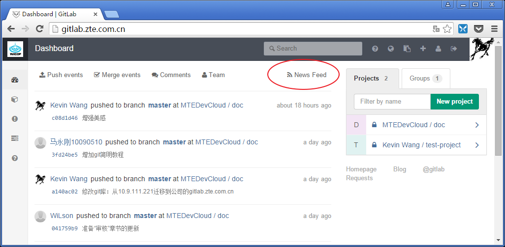
针对团队的RSS Feed：
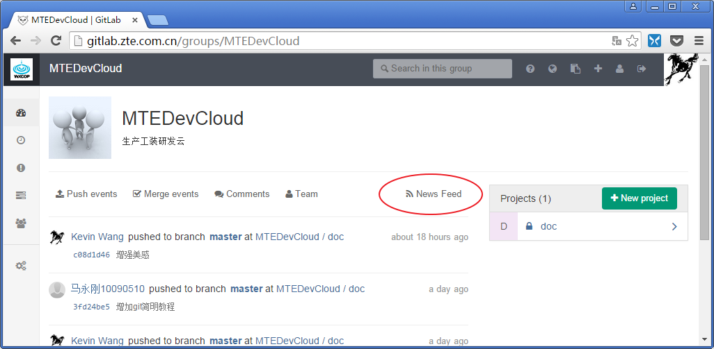
使用 RSS Reader（图中使用的是Snafer）订阅的效果：
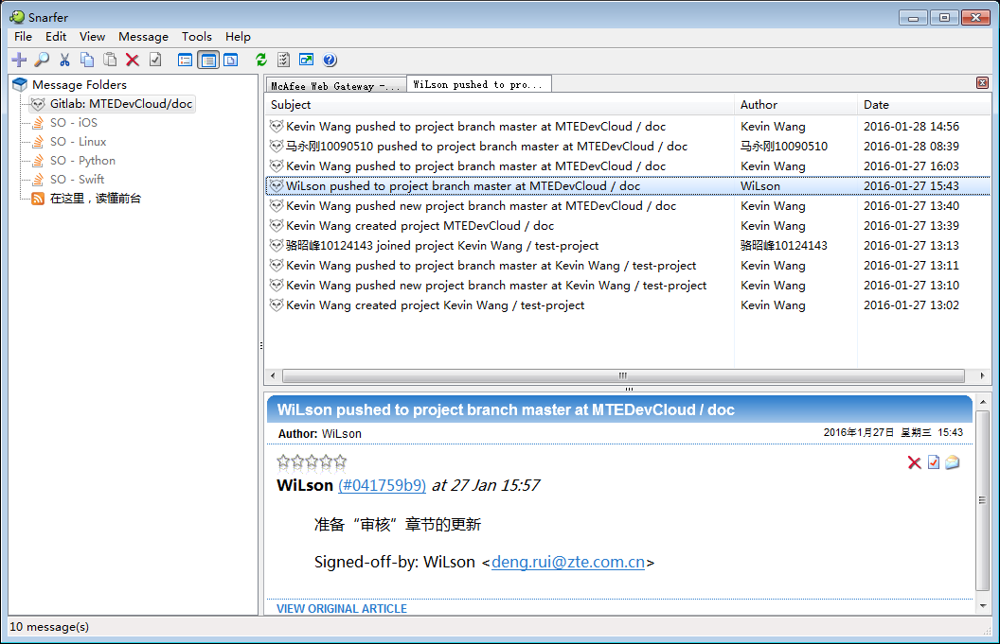
如何不clone到本地看remote repo的log?
程序猿如何频繁地commit，但又低调地push
SVN和git面对同样的一个问题：大部分程序猿是含蓄、内敛的，他既希望频繁的commit，让svn/git帮他记住每一步，但并不想把这些过程信息全都公诸于众，而只是把阶段性成果推送给大家或服务器。
具体情况还要分为两种：假定两名程序员A、B
- A、B负责的代码耦合性不高，或A、B不相互依赖
- A、B负责的代码耦合性高，或A、B相互依赖
- 需求：协同开发：调试期间多人之间代码依赖，相互调用，使用头文件……
- 设计：用SVN也可以协同开发，但会在服务器上留下大量无效的调试记录
- 操作：git方式：将本机库开放给同伴，合作开发完成后使用 git rebase -i 清理
- 准备
- A君
- .git目录下新建git-daemon-export-ok文件，表明该工程允许非授权访问
- cd /path/to/project.git
- touch git-daemon-export-ok
- git daemon –reuseaddr –base-path=/opt/git/ /opt/git/
- 告诉B君你的IP
- .git目录下新建git-daemon-export-ok文件，表明该工程允许非授权访问
- B君
- git checkout git://your_ip_address/project
- A君
- 调试过程
- A君快乐的随意本机修改并git commit
- B君随时随地的git pull
- 调试完成后
- A君
- git rebase -i将本地的提交进行清理
- 将一次记录git push到服务器上
- A君
- 准备
远程分支的操作
- 删除本地分支
- 删除远程分支
- git push origin :
- git push origin –delete
- git push origin :
- 删除本地tag
- git tag -d
- git tag -d
- 删除远程tag
- git tag -d
- git push origin :refs/tags/
- git push origin –delete tag
- git tag -d
- 删除“远程已经删除了的分支”对应的本地分支：git fetch -p
维持树的整洁
A successful Git branching model
方法就是：在git push之前，先git fetch，再git rebase
git rebase（衍合）
git rebase 一般自己一个人开发时使用，用来保持提交记录的整洁。一旦上传到github后，不应该使用git rebase,不然被骂死。
一旦分支中的提交对象发布到公共仓库，就千万不要对该分支进行衍合操作。
如果你遵循这条金科玉律，就不会出差错。否则，人民群众会仇恨你，你的朋友和家人也会嘲笑你，唾弃你。
Git多用户间协作还有什么引人入胜之处
- 集中式工作流

- 集成管理员工作流
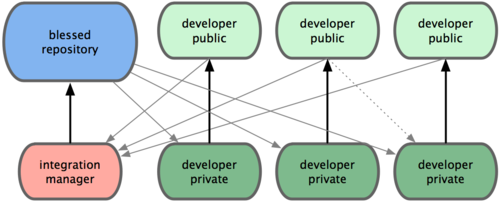 - 司令与副官流程（Linux）
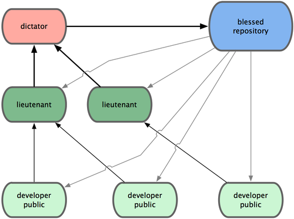
Round 5

git从何而来
这里有一篇git的创始人Torvalds（同时也是Linux的创始人）的接受中国媒体的一篇访谈录：
- Linux创始人Linus Torvalds访谈，Git的十年之旅 – 如果网页链接失效，重新百度即可，Torvalds接受类似的访谈录很多，但大多是英文的。
git去往何处
2005年7月26日开始，Torvalds把git托付给了一位日本人：Junio Hamano。Torvalds也说过自己一生最大的成功之一就包括把git托付给Hamano。
Hamano现在google，他的github帐号为：gitster，头像中抱着个大熊猫，说不定比较喜欢China哦。
git源码的提交统计中可以发现Hamano是提交最踊跃的：
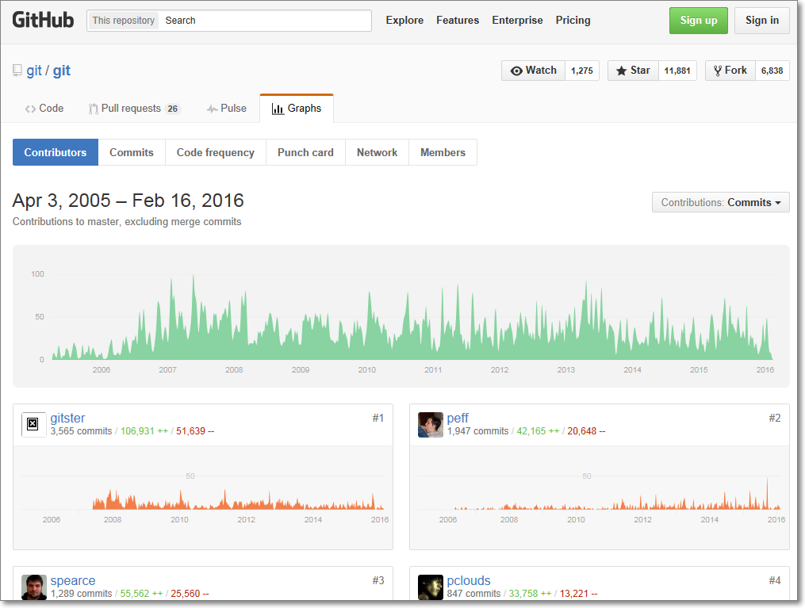
github上有这样几个卓越的组织（Orgnization):
- git:目前有8位成员，牵头人 Scott Chacon，他们充当管理者和传教士的角色，比较重要的贡献是：
- 维护git源码
- Hamano(gitster)并没有加入到这个Orgnization中，而只是fork到自己账号下，然后PR到 git/git，看来gitster只是想当程序员，不想当管理者和传教士——大概源于日本人和中国人类似，都比较低调。
- 管理和维护 git-scm.com 网站
- 维护git源码
- progit:目前有位成员，牵头人 Scott Chacon 和 Ben Straub，两人目前都供职于github公司，比较重要的贡献有
- 写了《Pro git》这本书，此书被翻译成多种语言，被奉为经典。
git有哪些好的入门的资料
读到这里是需要系统的了解、学习一下git的时候了，
当然，我明白你说的是中文资料。
但是有时候英文资料是不可避免的：
git命令我掌握的七七八八了，怎么整理一下
google 或 bing 上搜索图片：git cheat sheet —— 不要在baidu上搜索，结果你会很失望。
可以看到很多热心网友们整理的常用命令集，快选一幅打印出来或作为桌面吧！
比如（版权归作者所有，本文仅是转发）：
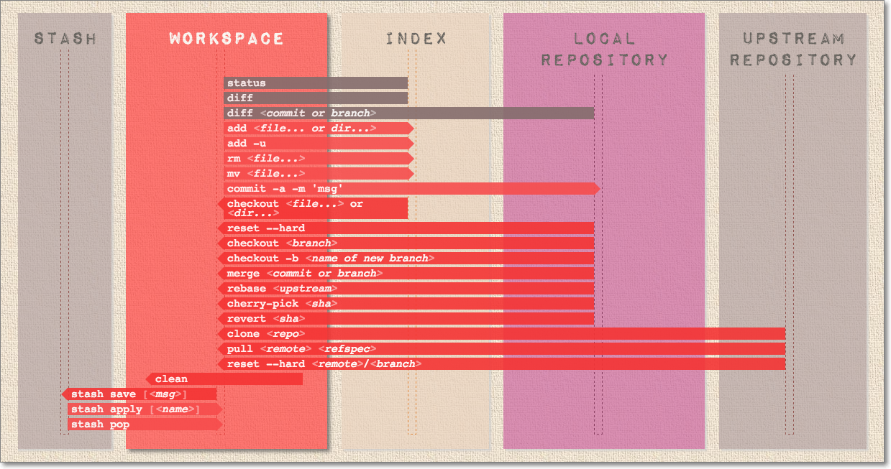
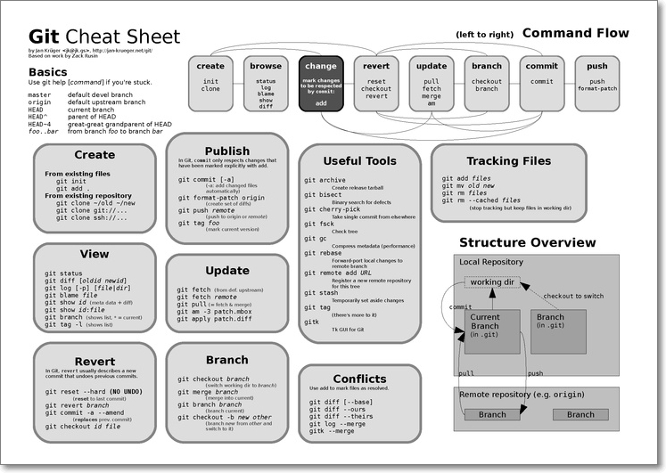
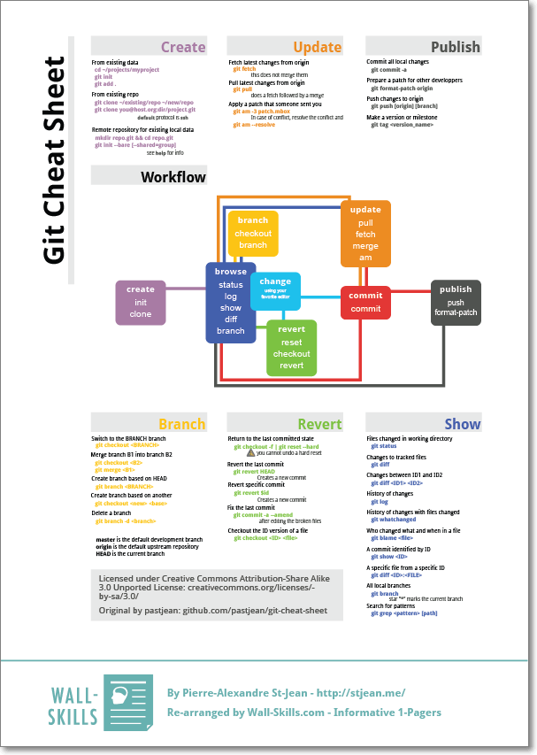
也有一些复杂到令人发指的：
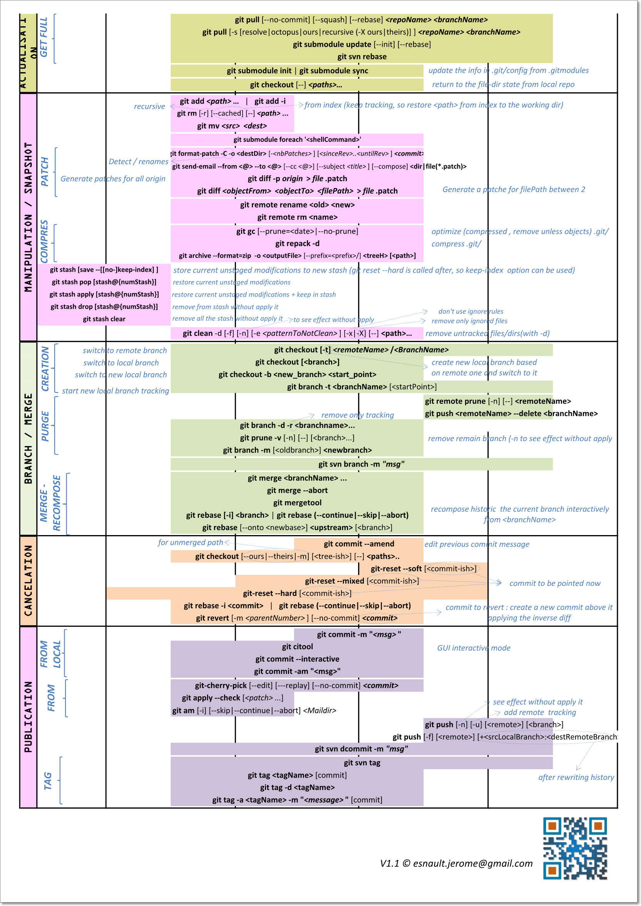
重新梳理git的软件
是时候看一下git的 维基百科 了：
Git is a widely-used source code management system for software development. It is a distributed revision control system with an emphasis on speed,[6] data integrity,[7] and support for distributed, non-linear workflows.[8] Git was initially designed and developed in 2005 by Linux kernel developers (including Linus Torvalds) for Linux kernel development.[9]
As with most other distributed version control systems, and unlike most client–server systems, every Git working directory is a full-fledged repository with complete history and full version-tracking capabilities, independent of network access or a central server.[10] Like the Linux kernel, Git is free software distributed under the terms of the GNU General Public License version 2.
- UI前端也有，比如github出品的 github desktop
- Git for Windows
* 第一代的名字叫msysGit，基于 msys（属于 MinGW）—— 2015年底已废弃
* 第二代重新建立了github项目Git for Windows，基于 msys2（不再属于MinGW），英语有自信的可以读读它的背景- TortoiseGit：类似TortoiseSVN，可以做图标重绘。
Round 6
导出某个子目录及其log成为一个新的repo
cd oldrepo
git subtree split -P subdir -b newbranch
gitk newbranch
mkdir ../newrepo.git
cd ../newrepo.git
git init
git config --bool core.bare true
cd ../oldrepo
git push ../newrepo.git newbranch:master #newrepo.git is a pure repo without my files
cd ..
git clone newrepo.git
分支2需改bug，但我正在分支1上编码并不想commit怎么办
使用git的时候，我们往往使用branch解决任务切换问题，例如，我们往往会建一个自己的分支去修改和调试代码, 如果别人或者自己发现原有的分支上有个不得不修改的bug，我们往往会把完成一半的代码 commit提交到本地仓库，然后切换分支去修改bug，改好之后再切换回来。这样的话往往log上会有大量不必要的记录。其实如果我们不想提交完成一半或者不完善的代码，但是却不得不去修改一个紧急Bug，那么使用’git stash’就可以将你当前未提交到本地（和服务器）的代码推入到Git的栈中，这时候你的工作区间和上一次提交的内容是完全一样的，所以你可以放心的修 Bug，等到修完Bug，提交到服务器上后，再使用’git stash apply’将以前一半的工作应用回来。也许有的人会说，那我可不可以多次将未提交的代码压入到栈中？答案是可以的。当你多次使用’git stash’命令后，你的栈里将充满了未提交的代码，这时候你会对将哪个版本应用回来有些困惑，’git stash list’命令可以将当前的Git栈信息打印出来，你只需要将找到对应的版本号，例如使用’git stash apply stash@{1}’就可以将你指定版本号为stash@{1}的工作取出来，当你将所有的栈都应用回来的时候，可以使用’git stash clear’来将栈清空。
- git stash: 备份当前的工作区的内容，从最近的一次提交中读取相关内容，让工作区保证和上次提交的内容一致。同时，将当前的工作区内容保存到Git栈中。
- git stash pop: 从Git栈中读取最近一次保存的内容，恢复工作区的相关内容。由于可能存在多个Stash的内容，所以用栈来管理，pop会从最近的一个stash中读取内容并恢复。
- git stash list: 显示Git栈内的所有备份，可以利用这个列表来决定从那个地方恢复。
- git stash clear: 清空Git栈。此时使用gitg等图形化工具会发现，原来stash的哪些节点都消失了。
- git stash apply：将以前一半的工作应用回来
我反悔了，我要回退！
丢弃（要懂得放弃）
git clean -df：丢弃untracked的文件，不丢弃modified的文件git checkout .：用缓存或HEAD中的文件覆盖本地文件，这些文件中的修改都丢弃掉了，但新增的文件不会被丢弃- git stash #把所有没有提交的修改暂存到stash里面。可用git stash pop回复。
- git reset –soft HASH #返回到某个节点。保留修改
- git reset –hard HASH #返回到某个节点，不保留修改。
- git reset –hard HEAD
- git reset –hard HEAD~1
- git reset –hard HEAD~5
- git clean -f: 删除 untracked files
- git clean -fd: 连 untracked 的目录也一起删掉
- git clean -xfd: 连 gitignore 的untrack 文件/目录也一起删掉 （慎用，一般这个是用来删掉编译出来的 .o之类的文件用的）
- 在用上述 git clean 前，墙裂建议加上 -n 参数来先看看会删掉哪些文件，防止重要文件被误删
- git clean -nxfd
- git clean -nf
- git clean -nfd
回退远程
- git reset –soft hashcode remoteRepo
- 把本地的回退了，然后把远程branch删掉，然后push新的
git reset
git reset [-q] [<tree-ish>] [--] <paths>…
git reset (--patch | -p) [<tree-ish>] [--] [<paths>…]
git reset [--soft | --mixed [-N] | --hard | --merge | --keep] [-q] [<commit>]
- 图中3个动作：
- 替换引用的指向。引用指向新的提交ID。
- 替换暂存区。替换后，暂存区的内容和引用指向的目录树一致。
- 替换工作区。替换后，工作区的内容变得和暂存区一致，也和HEAD所指向的目录树内容相同。
- 3个参数：
- –hard: 执行上图中的全部动作1、2、3
- –soft: 执行上图中的全部动作1
- –mixed:执行上图中的全部动作1、2，—— 默认操作
- 举例：
git reset==git reset HEAD：用HEAD重置暂存区，工作区不受影响，相当于回滚/撤销git addgit reset -- filename==git reset HEAD filename：仅将文件的改动撤出暂存区，暂存区中其他文件不改变。git reset --soft HEAD^：工作区和暂存区不改变，但是HEAD和当前分支引用向前回退一次- 用途：提交了之后，你又发现代码没有提交完整，或者你想重新编辑一下再提交
git reset --hard==git reset --hard HEAD: 用HEAD覆盖暂存区和工作区，即：丢弃所有本地修改
- 重置可以朝前，也可以朝后
$ git br * master ecfc106 2 new ab3fa01 3 $ git reset --soft new $ git br * master ab3fa01 3 new ab3fa01 3
Round 7
git和SVN在元数据存储上有什么区别
svn是基于增量存储的，两次提交对于repo来说只保存变化量，git不使用svn的增量方式保存数据，而是使用快照。因为git的分布式特性，并没有一颗树一样成长的repo，repo更像是一张网式的成长，节点与节点之间可能会绕很远才能找到亲戚关系，所以增量无从谈起。
来看下面这个过程：
- A、B两个git clone
- A的commit 时间比 B 晚
- A先push
- B在push时失败，先pull，再次commit
- A一次ci，B两次ci —— 比svn多了一次ci，因为svn中B是先merge后ci，git中是先ci后merge再ci
- B再push
- git log：ci的顺序是：B的ci、A的ci、B的merge后ci —— B的ci会插入到A的ci前面
如果用增量存储，将很难把整个过程记录下来，根本原因是：开发者提交前是不需要同步别人代码的。
git 的对象（object）
- git的指针（branch是指针）指向某个对象（object）
- git的object包含4个部分：
- 对象名：40bit的HASH
- 类型：有4种：
- blob
- tree
- commit
- tag
- 大小：
- 内容：
- 可以使用
git show <对象名>来查看一个object的内容
4类object的图示：
| blob | tree | commit | tag |
|---|---|---|---|
 |
 |
 |
 |
我的粗浅认识是：
- blob对象封装了具体的文件，blob的百度百科，blob单词的意思是一疙瘩、一坨。
- tree类似目录、文件夹，包含了tree和blob
- commit：包含了一个tree的指针（对象名），和父级commit对象，还有
git commit时的相关信息。 - tag：指向一个commit对象
来实际操作一把：
git log找一条commit
$ git lg e3426a5 | 2016-02-16 11:20:22 +0800 | 2016-02-16 11:20:22 +0800 | Kevin Wang 调整章节，内容基本没变 a15f695 | 2016-02-16 10:28:16 +0800 | 2016-02-16 10:28:16 +0800 | Kevin Wang 增加 git cheat sheet 小节 c242093 | 2016-02-04 11:30:21 +0800 | 2016-02-04 11:30:21 +0800 | wkevin 笔误 48eda25 | 2016-02-04 11:21:57 +0800 | 2016-02-04 11:21:57 +0800 | wkevin 笔误: 缺少一个反括号git show <object-name>可以查看各类object的细节git show <commit-object-name>可以查看 commit 类型的细节，其中包括了diff（即：和parrent父级commit对象相比的差异：tree及其blob的差异）
$ git show e3426a5 commit e3426a51534d97f5c73369a98fd38d6fb2f83f0a Author: Kevin Wang <wkevin27@gmail.com> Date: Tue Feb 16 11:20:22 2016 +0800 调整章节，内容基本没变 diff --git a/README.md b/README.md index 17944e2..a0be055 100644 --- a/README.md +++ b/README.md @@ -31,21 +31,24 @@ git 有自己的 [user manunal](https://www.kernel.org/pub/software/scm/git/docs - [merge是怎么玩儿的](#merge) - [Round 4](#round4)git show --pretty=raw <commit-object-name>还能更多的查看 commit 对象所指向的tree对象
$ git show --pretty=raw e3426a5 commit e3426a51534d97f5c73369a98fd38d6fb2f83f0a tree 65e1673d28da6cf7554cc0bed020673f68276112 parent a15f6954d609da2bebc243a52a8dd1094e6e2fd6 author Kevin Wang <wkevin27@gmail.com> 1455592822 +0800 committer Kevin Wang <wkevin27@gmail.com> 1455592822 +0800 调整章节，内容基本没变 diff --git a/README.md b/README.md index 17944e2..a0be055 100644 --- a/README.md +++ b/README.mdgit show <tree-object-name>或git ls-tree <tree-object-name>或git ls-tree <commit-object-name>都能够看到 tree 对象更多的细节
$ git show 65e1673 tree 65e1673 .gitignore README.md img/ $ git ls-tree 65e1673 100644 blob 40f51b88ea8b90ff1c9db36ffc45cfd71f71c078 .gitignore 100644 blob a0be0555eeeb50e4702e137a7837ad9970be7755 README.md 040000 tree 5aec0814a9b43d040a1a3388aaf2c4ae60e296f4 img $ git ls-tree e3426a5 100644 blob 40f51b88ea8b90ff1c9db36ffc45cfd71f71c078 .gitignore 100644 blob a0be0555eeeb50e4702e137a7837ad9970be7755 README.md 040000 tree 5aec0814a9b43d040a1a3388aaf2c4ae60e296f4 imggit show <blob-object-name>查看一个blob对象的细节，如果是文本文件就等同于$cat file了
$ git show 40f51b *.html .vim.*
git 的快照存储有点不可思议，如何做到好又多的
- 继续前面的话题，我们往前查几个commit对象，试图发现的更多一些
$ git show --pretty=raw 48eda25 commit 48eda255c3f727e57f1462592a8cd8fd8d16839a tree f1683d3e377fcbb99cca10c481d0070375e1bf23 parent 12205fd2616a0af5ebe8243f6e5c16a64e9e9127 author wkevin <wkevin@users.noreply.github.com> 1454556117 +0800 committer wkevin <wkevin@users.noreply.github.com> 1454556117 +0800 笔误: 缺少一个反括号 - 看看这个tree对象包含的内容
$ git ls-tree f1683d3e 100644 blob 40f51b88ea8b90ff1c9db36ffc45cfd71f71c078 .gitignore 100644 blob 5211c0dae2ab042cf0cf2edff08809af510e358a README.md 040000 tree 4867a64660a9d90a8a5a966c9fac1187861762f3 img
可以发现两次commit所指向的tree对象中：
- .gitignore的HASH相同
- README.md的HASH不同
因此说明：每次提交仅会把有改动的file重新计算HASH并封装为对象进行存储
整个文件存储那不是很浪费空间？—— Yes！
那为什么还比svn的增量存储更快呢？ —— 这个问题